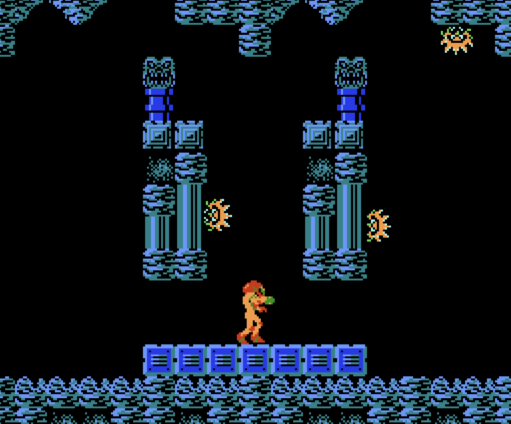
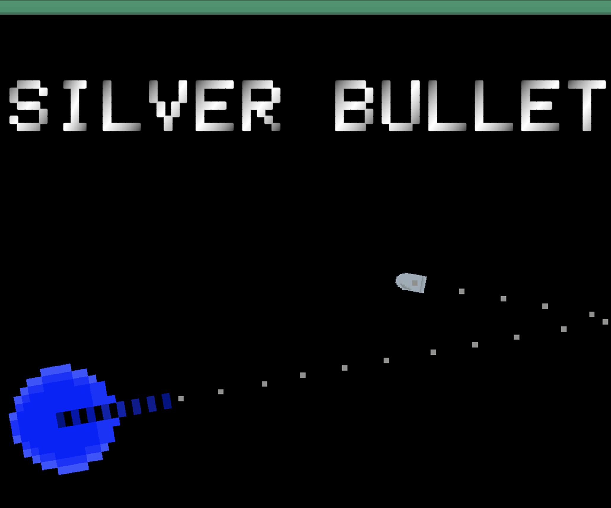

In this project, I worked in a 3-person team to recreate the first area in Metroid using Unity. I developed the collectables, the morph ball, the long beam, Zoomer, Skree, Zeb, audio, and the level design of the special level. Gemini was used for door transition code.

In this project, I had 2 weeks to create my own game using Unity.